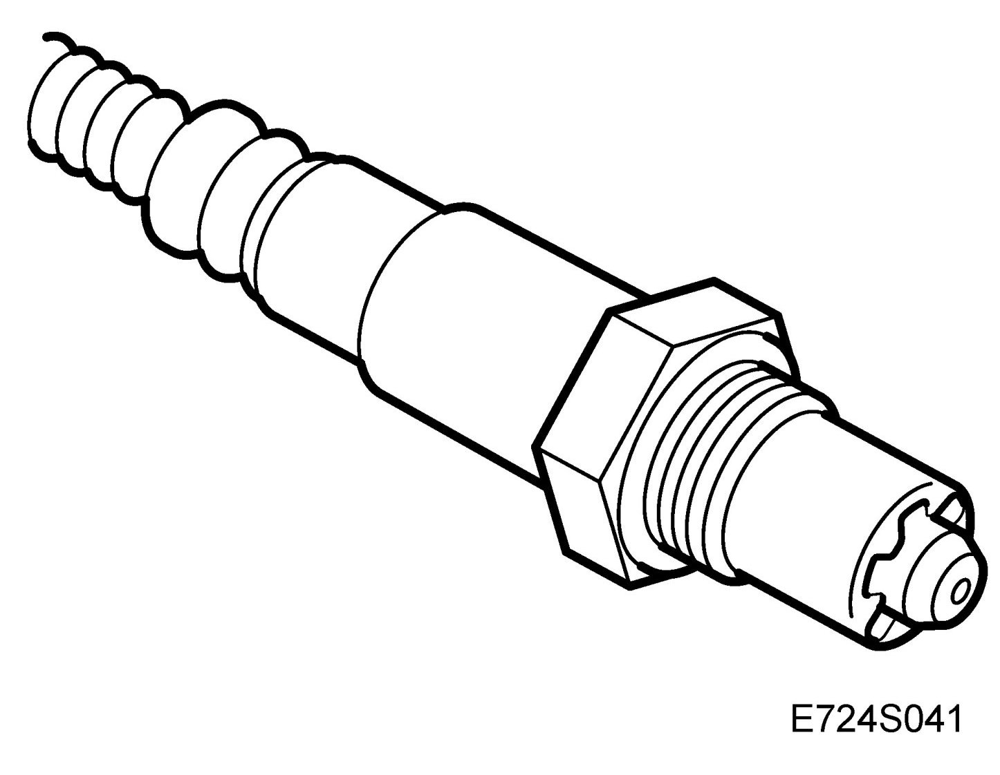
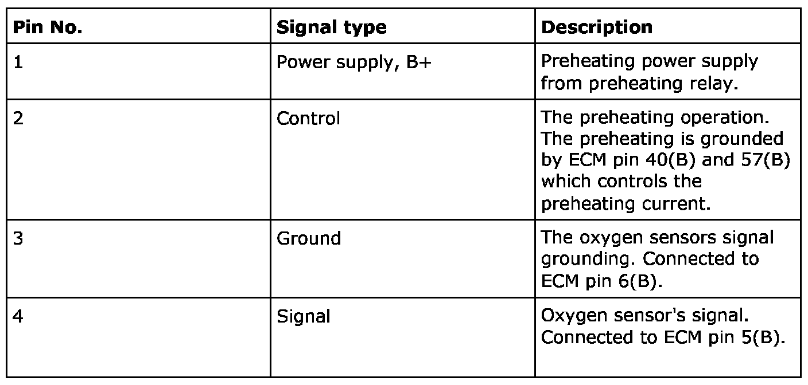
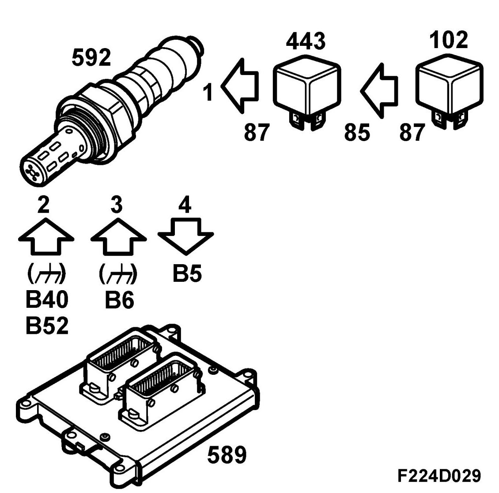
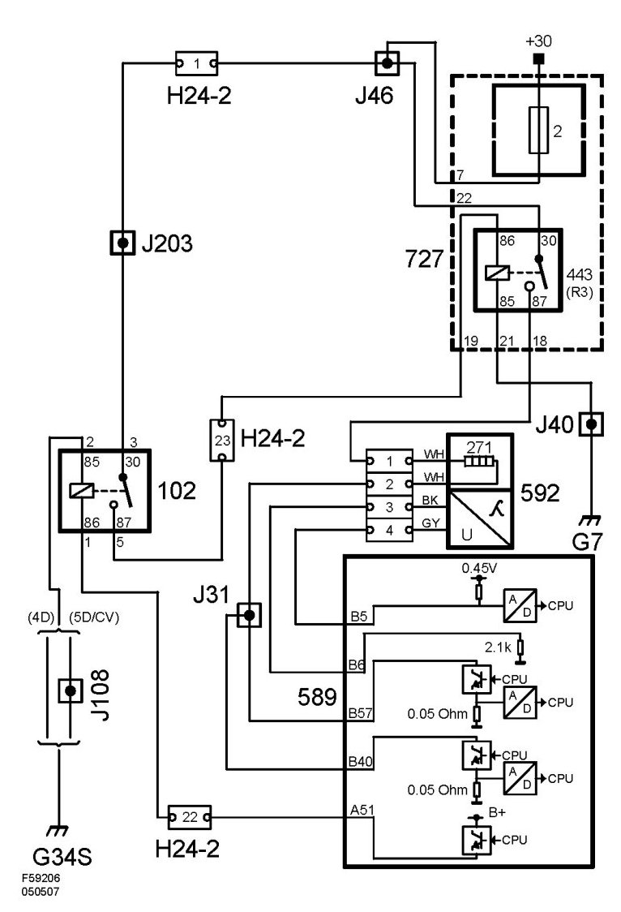

Front Preheated Oxygen Sensor (592), T8
Front Preheated Oxygen Sensor (592), T8
Location
Pre-heated oxygen-sensor, front (592)
Main task
In order for the exhaust purification to be effective the catalytic converter requires an air/fuel ratio of exactly 14.7:1. The system is therefore equipped with an oxygen sensor which is fitted before the catalytic converter. The front oxygen sensor is called 1 or O2S 1.
Type

Connection



In order to quickly generate a signal after start the oxygen sensor must be preheated. In order to control the heating effect the grounding of the circuit is pulse width modulated.
The control module estimates the exhaust gas temperature on the basis of load and engine speed. At high temperatures the preheating is disconnected to avoid damaging the oxygen sensor.
When the exhaust gases pass the oxygen sensor the oxygen content is measured by a chemical reaction. The sensor output voltage is proportional to the oxygen content and the oxygen content is a reflection of the air/fuel mixture. If the engine receives a richer than normal fuel mixture (lambda less than 1) the output voltage of the oxygen sensor will be about 0.9 V. If the fuel mixture is weaker than normal (lambda greater than 1) the output voltage of the oxygen sensor will be about 0.1 V.
The sensor voltage changes very quickly when the lambda value exceeds 1.
The lambda control factor is 1.00 when the lambda control is inactive. As soon as the lambda control is activated the oxygen sensor voltage is allowed to affect the control correction factor. If the sensor voltage is less than 0.50 V (weak mixture) the correction factor will slowly be raised, i.e. more petrol is injected. Conversely the correction factor will slowly be lowered if the sensor voltage exceeds 0.50 V.